Debian GNU/Linux is an operating system created by volunteers of one of the largest and longest-running free software projects in the world. More than a hundred other Linux distributions like Ubuntu build their edifices on solid Debian awesomesauce.
There are 3 release branches - stable, testing, and unstable - and the current stable branch goes by the name wheezy. Below is a visual walk-through of a Debian installation that features:
- separate root, encrypted home and swap partitions
- a minimal foundation for any type of Linux configuration (server, desktop, rolling release)
Step 0 - Installer
Download a 64-bit (or 32-bit for older machines) Debian mini installer and burn the image to a CD or prepare a USB boot device).
Step 1 - Go!

 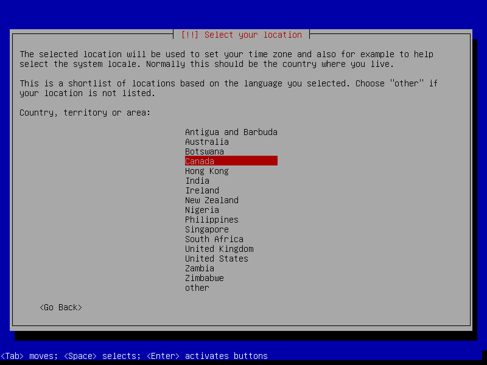
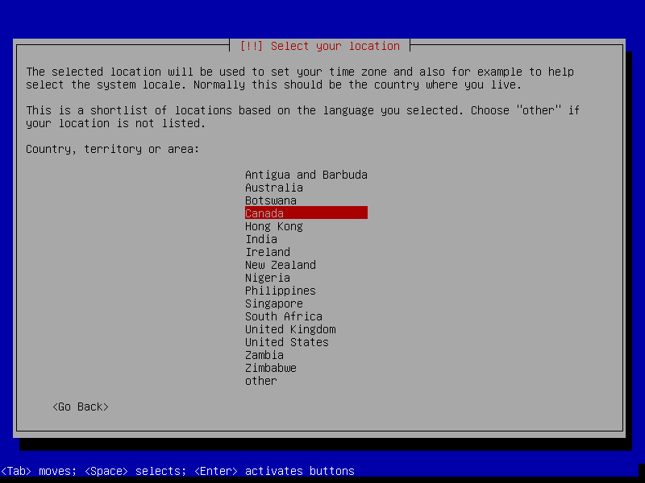
 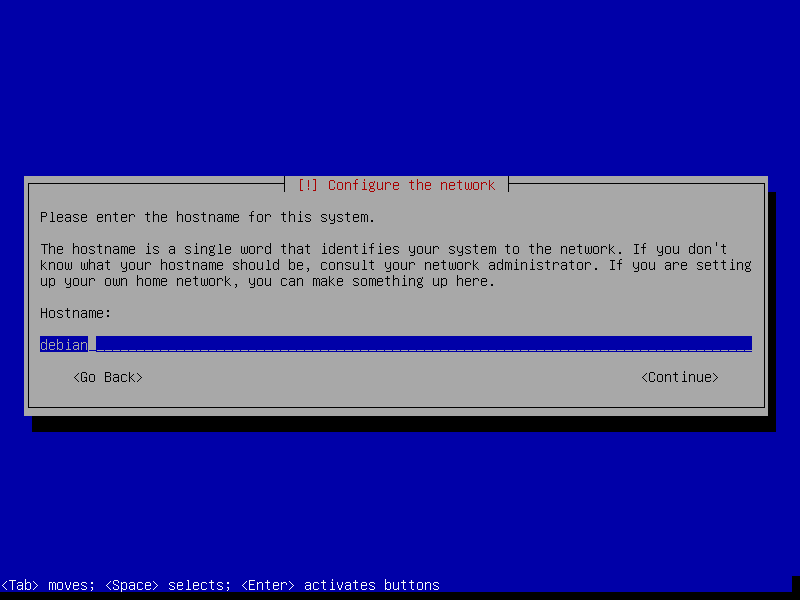
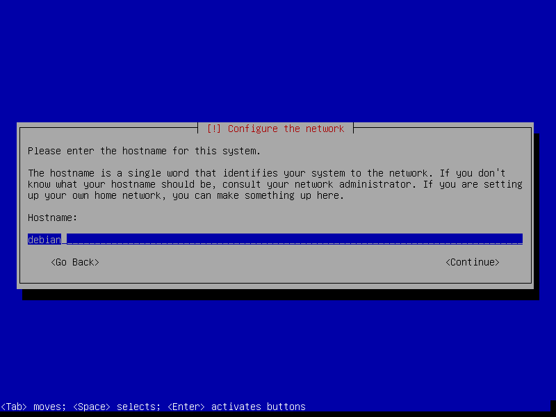


 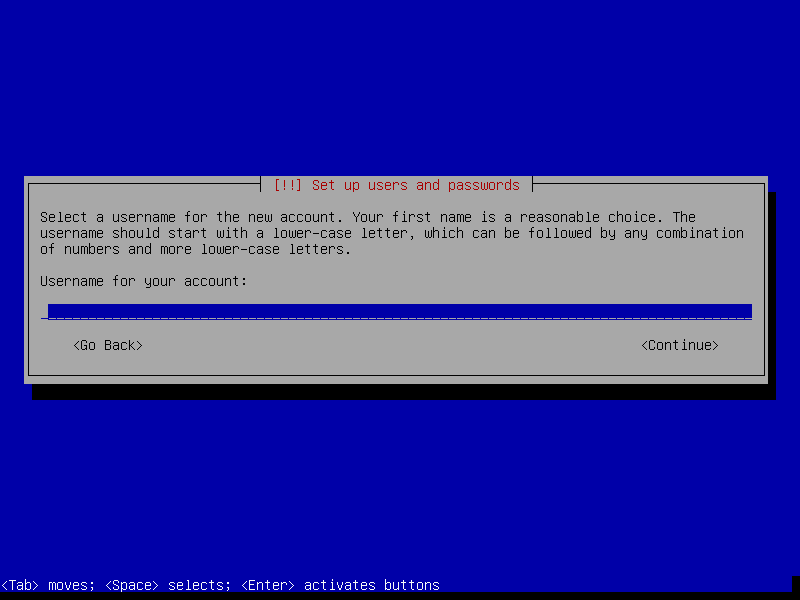
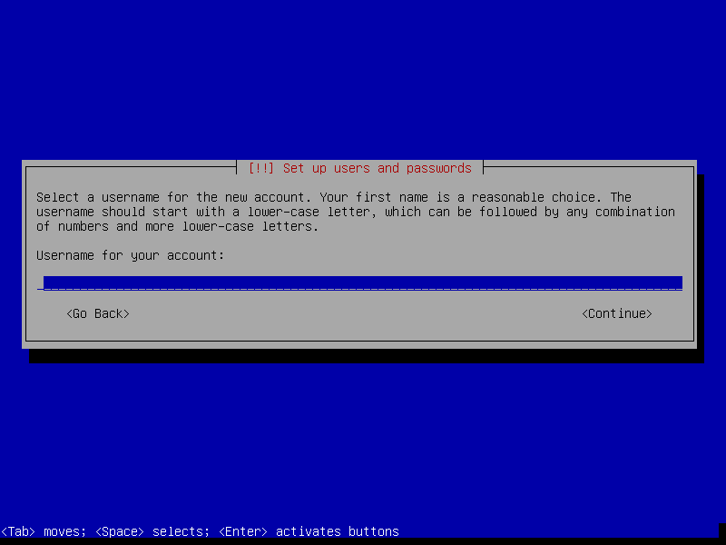

 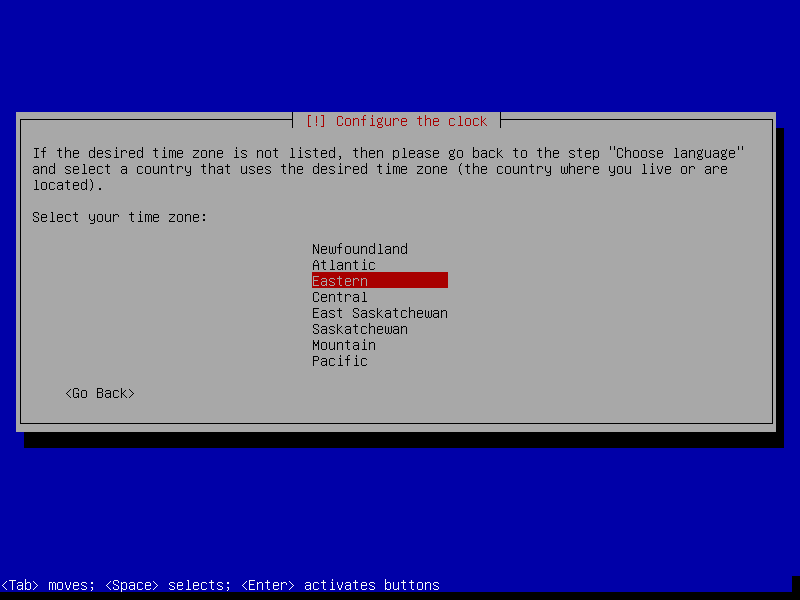
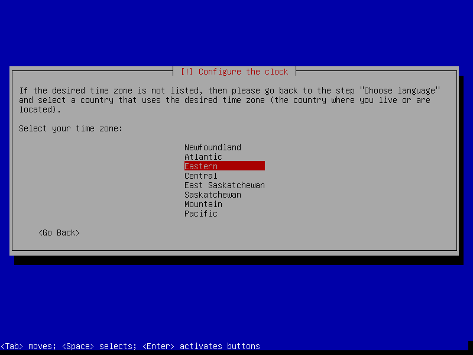
Step 2 - Partitions
In the example below we create 3 partitions on the disk:
- sda1 is a 20GB root partition
- sda2 is a 1GB swap partition encrypted with a random key (double the RAM <= 2GB is a good rule of thumb for sizing swap)
- sda3 uses the remaining space as a home partition encrypted with a passphrase


Note
Setting Mount options to noatime decreases write operations and boosts drive speed.


Note
If the hard disk has not been securely wiped prior to installing Debian (using a utility like DBAN) you may want to configure Erase data as yes. Note, however, that depending on the size of the disk this operation can last several hours.


 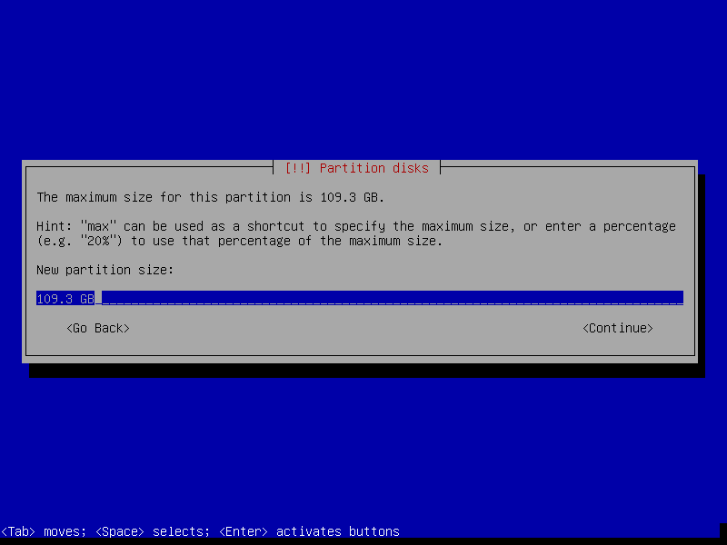
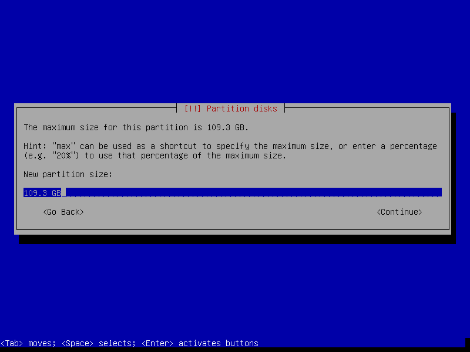


 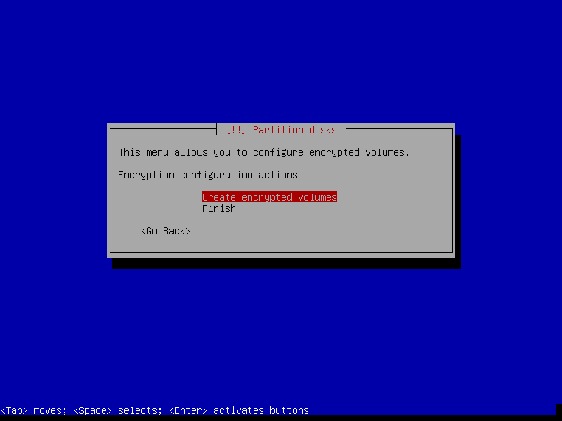
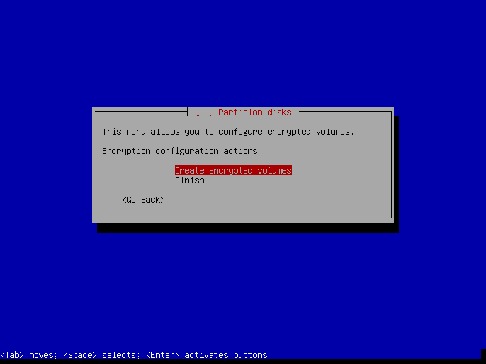
 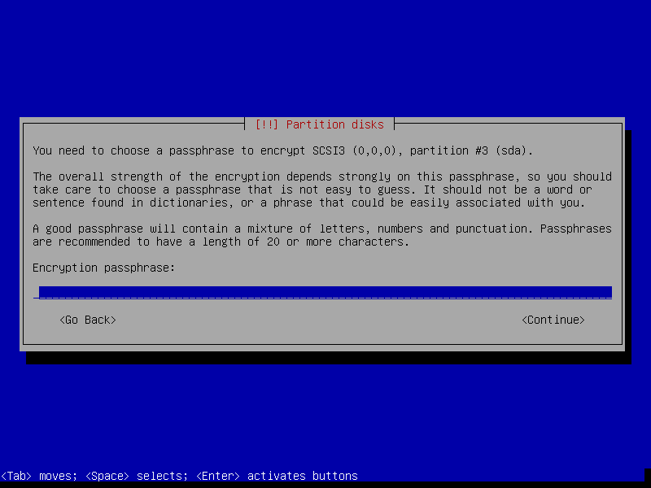
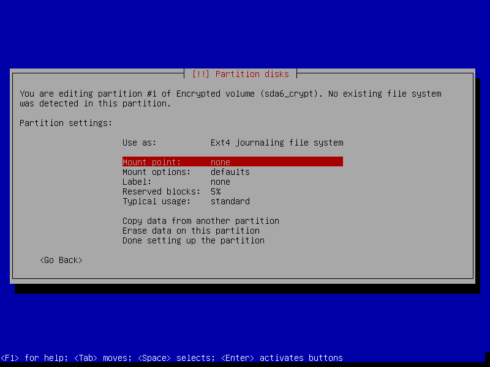
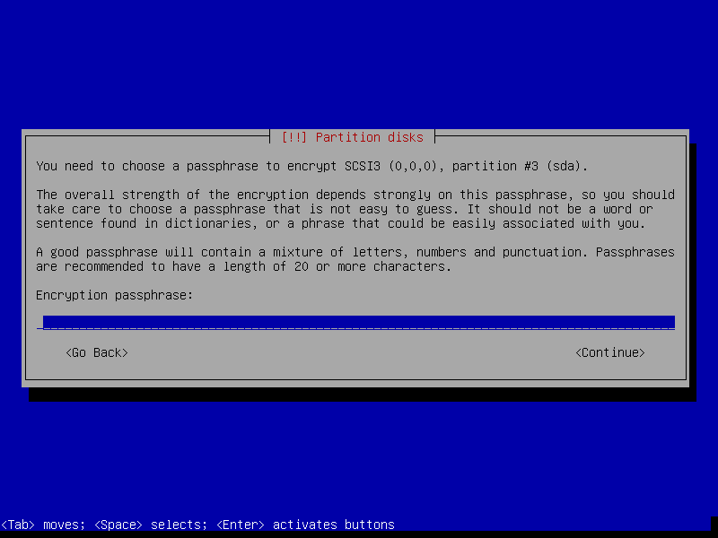
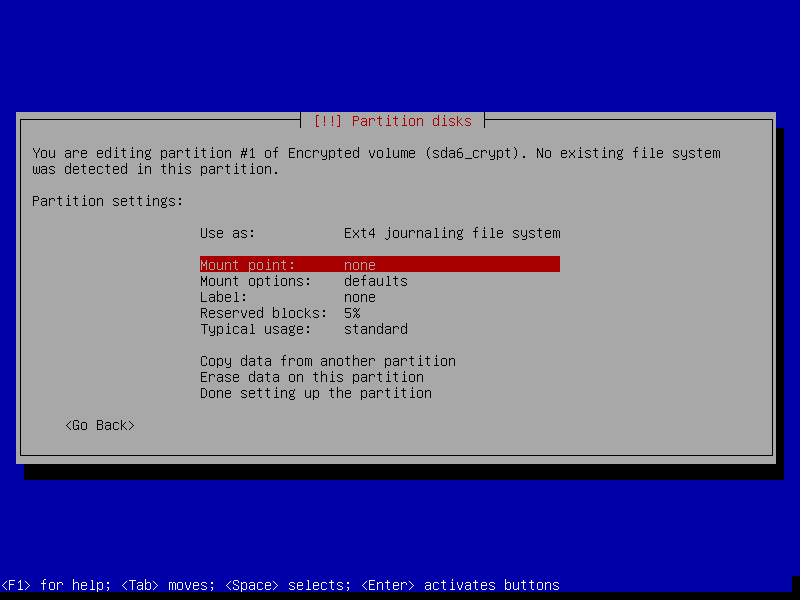

Step 3 - Install packages and finish up

Note
Select only [*] Standard system utilities if you want to start with a minimal foundation (no desktop) to build your own post-install custom Debian configuration.


Note
If an encrypted home partition was created in Step 2 the system will display a passphrase prompt to unlock the partition.

Enjoy your fresh Debian!
Add extra packages, stick with stable or move to testing or unstable or maybe setup a home server?